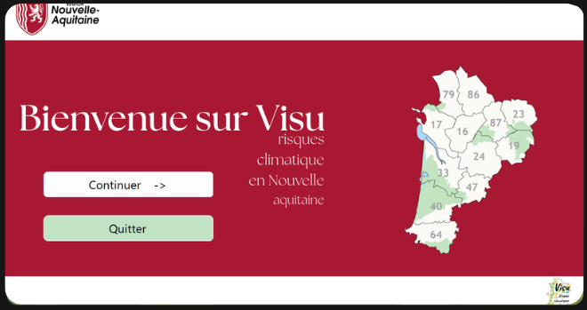

2026
—
Développement d'application
Visualisation de Données Météorologiques
Application interactive C# & base de données relationnelle
Conception d'une application de bureau interactive permettant de naviguer intuitivement à travers les données météorologiques open data de la région Nouvelle-Aquitaine. Stockage persistant en base relationnelle, analyses statistiques couplées à Python et interface ergonomique complète.
C#
Python
SQL
UML
Visual Studio
Git